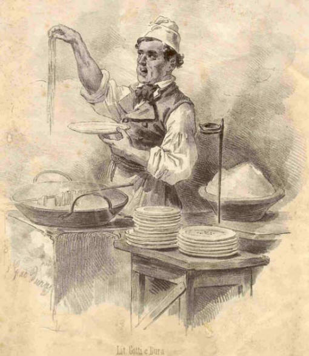
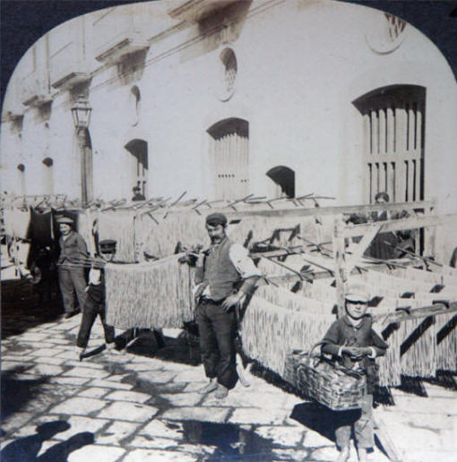
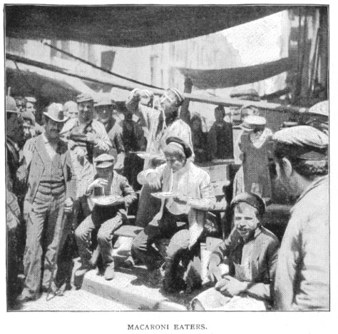

Nothing says Italy like its food, and nothing says Italian food like pasta. Pasta is integrant part of Italy’s food history. Wherever Italians immigrated they have brought their pasta along, so much so today it can be considered a staple of international cuisine. Unlike other ubiquitous Italian products like pizza and tomato sauce, which have a fairly recent history, pasta may have a much older pedigree, going back hundreds -if not thousands- of years. Unravelling the long and often complex history of this dish we have to look at its origins and some of the myths surrounding it.
Many school children were taught that the Venetian merchant Marco Polo brought back pasta from his journeys to China (along with gelato, some believed…). Some may have also learnt that Polo’s was not a discovery, but rather a rediscovery of a product once popular in Italy among the Etruscans and the Romans. Well, Marco Polo might have done amazing things on his journeys, but bringing pasta to Italy was not one of them: noodles were already there in Polo’s time. There is indeed evidence of an Etrusco-Roman noodle made from the same durum wheat used to produce modern pasta: it was called “lagane” (origin of the modern word for lasagna). However this type of food, first mentioned in the 1st century AD, was not boiled, as it is usually done today, but ovenbaked. Ancient lagane had some similarities with modern pasta, but cannot be considered quite the same. The country will have to wait a few centuries for its most popular dish to make a further culinary leap forward.
Like so much of southern Italian life, the Arabic invasions of the 8th century heavily influenced regional cuisine. Today, the presence of Arabic people in the south of the peninsula during the Middle Ages is considered the most likely reason behind the diffusion of pasta. The modern word “macaroni” derives from the Sicilian term for kneading dough with energy, as early pasta making was often a laborious, day-long process. How these early dishes were served is not truly known, but many Sicilian pasta recipes still include typically middle eastern ingredients, such as raisins and cinnamon, which may be witness to original, medieval recipes. This early pasta was an ideal staple for Sicily and it easily spread to the mainland since durum wheat thrives in Italy’s climate. Italy is still a major producer of this hard wheat, used to make the all-important semolina flour.
By the 1300’s dried pasta was very popular for its nutrition and long shelf life, making it ideal for long ship voyages. Pasta made it around the globe during the voyages of discovery a century later. By that time different shapes of pasta have appeared and new technology made pasta easier to make. With these innovations pasta truly became a part of Italian life. However the next big advancement in the history of pasta would not come until the 19th century when pasta met tomatoes. Although tomatoes were brought back to Europe shortly after their discovery in the New World, it took a long time for the plant to be considered edible. In fact tomatoes are a member of the nightshade family and rumors of tomatoes being poisonous continued in parts of Europe and its colonies until the mid 19th century (check the history of tomato here). Therefore it was not until 1839 that the first pasta recipe with tomatoes was documented. However shortly thereafter tomatoes took hold, especially in the south of Italy. The rest of course is delicious history.
Source #1 Source #2 Source #3